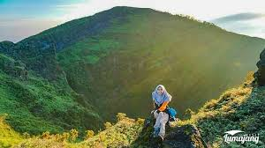

Gunung Lemongan adalah sebuah gunung berapi tipe maar, di Jawa Timur. Gunung ini merupakan bagian dari kelompok Pegunungan Iyang. Puncaknya adalah Tarub (1.651 m). Gunung Lemongan termasuk dalam wilayah dua kabupaten, yaitu Lumajang dan Probolinggo.
 : 082256823328 (Farin)
: 082256823328 (Farin) : lenjelenan@gmail.com
: lenjelenan@gmail.com : LENJELENAN
: LENJELENAN